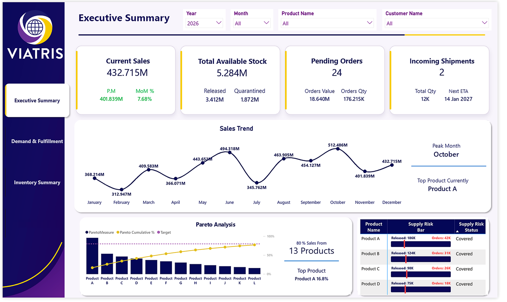
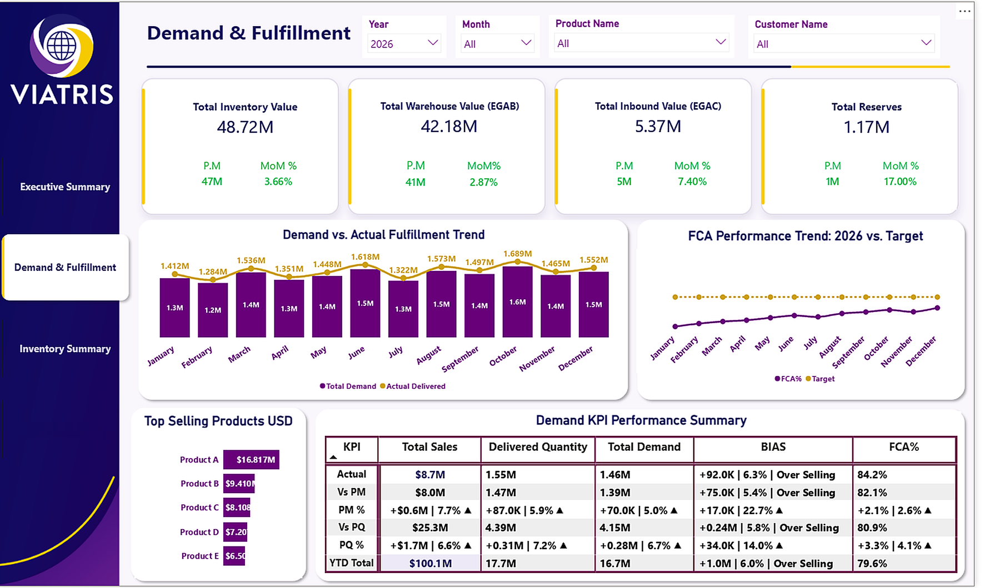
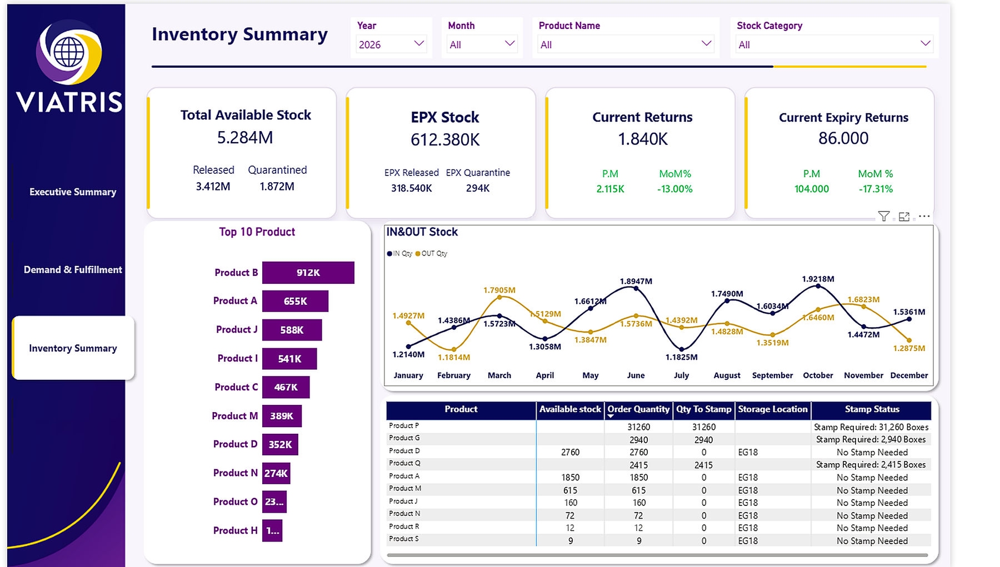

Demand Planning Dashboard
A three-page Power BI report for demand planning in a pharma company, based on the reports I build at work at Viatris. I changed the product names and all the numbers, so nothing here is real company data. The main question it answers is simple: are we delivering what customers ordered, how good was our forecast, and which products are at risk?
Screenshots



What’s in it
Business question
Are we delivering the demand we forecast, how accurate was the forecast,
and which products could run short or expire?
KPIs
Sales and change vs. last month · Forecast accuracy (FCA %) · Bias ·
Demand vs. delivered quantity · Supply covered % · Inventory, warehouse, inbound and reserve
values · Pending orders · Incoming shipments
Breakdowns
Product · customer · month and year · released / quarantined stock ·
delivery date
Techniques
DAX measures for month-over-month change, FCA %, bias and Pareto % ·
conditional formatting with colour measures · risk bars inside a table · page navigation
with bookmarks · custom theme
This project uses work data, so I can't share the file publicly. Contact me if you'd like a walkthrough.